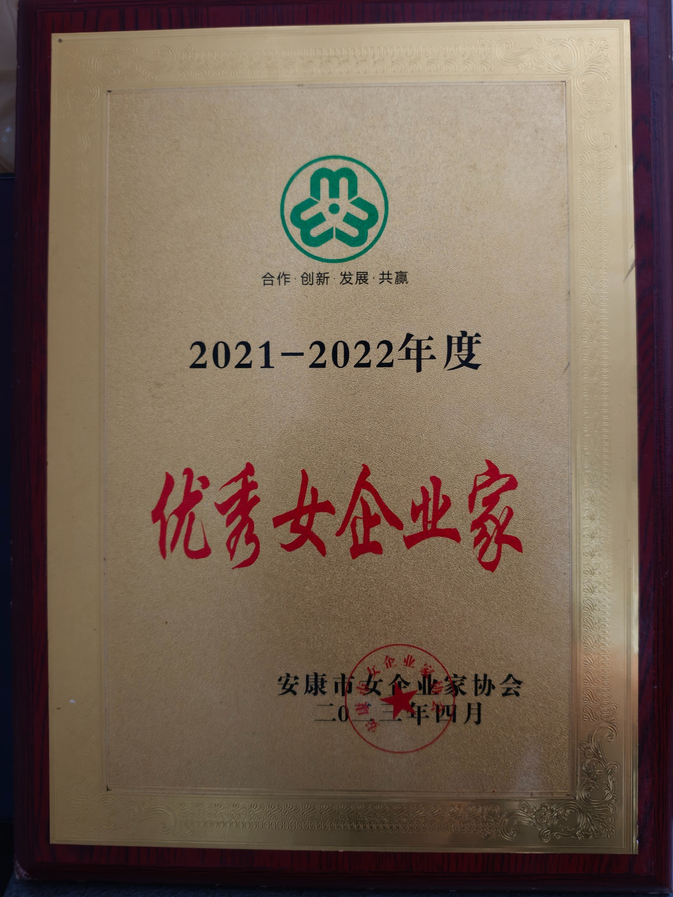

服务介绍
一站式出行补给，让每次进站更简单
介绍加油、便利零售、休整等基础服务，适合长期作为官网内容。
紫荆加油站位于陕西省安康市汉滨区，以成品油零售和便民服务为核心，为周边居民、通勤车辆与过往车主提供稳定、便捷的出行补给。
网站视觉参考成熟能源企业官网的“企业形象 + 主营业务 + 新闻动态 + 社会责任”结构，同时更突出本地企业的人物故事与社区连接。
围绕车主进站场景，提供油品补给、便利零售和基础便民服务。页面结构采用企业官网常见的模块化展示，后续可以继续扩展洗车、充电等业务。
面向日常家用车辆的常规燃油补给，突出快捷、规范的进站体验。
满足不同车型与驾驶需求，服务信息可根据站内实际油品随时调整。
为符合条件的柴油车辆提供补给，具体供应情况以油站现场为准。
全天候营业，方便通勤、夜间出行及临时补给需求。
饮用水、饮料、零食及常用出行用品，打造“一站式”短暂停靠体验。
可展示卫生间、免费充气等站内配套，并按实际运营情况持续补充。
资料显示，周敬霞从下岗创业起步，1998年融资创建“紫荆石化公司”，之后陆续拓展美容、酒店及电子商务等业务，并持续参与本地就业与公益事业。
当前图片以你上传的加油站主图及前面生成的多角度示意图为主。用于正式宣传前，建议逐步替换为现场实拍。

现有资料中，周敬霞曾获市级“三八红旗手”“慈善先进个人”等荣誉，并于2020年度被安康市女企业家协会评为“抗疫先进个人”。你上传的证书显示其获评2021—2022年度“优秀女企业家”。
以企业家成长经历与本地创业故事为核心，增强品牌的人物识别度。
资料记载其长期参与助学、助老和灾害捐助等公益活动。
资料记载企业优先吸纳下岗女工、退伍军人及困难人员就业。
这里先放适合官网长期展示的内容型栏目，不虚构具体商务合作。后续你有真实新闻后，可以直接替换。
介绍加油、便利零售、休整等基础服务，适合长期作为官网内容。
通过常态化安全提醒强化油站的专业、可信形象。
将企业家经历、公益记录与品牌发展结合，形成区别于大型连锁的特色。
紫荆加油站 · 陕西省安康市汉滨区 S207（旧）